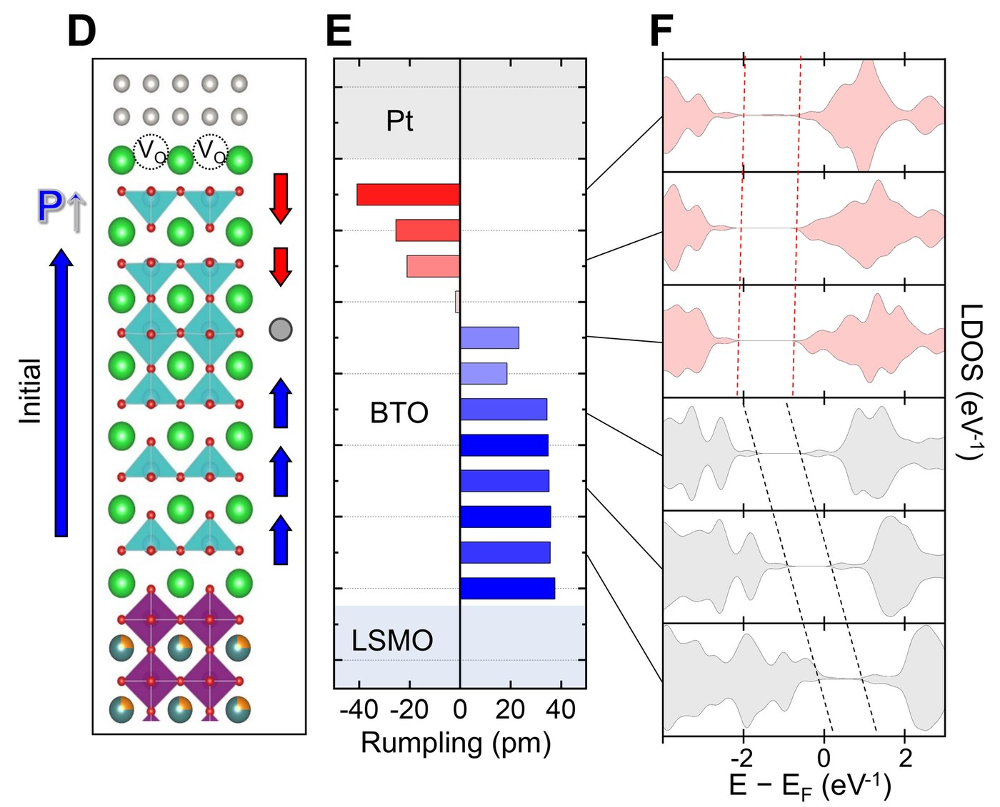
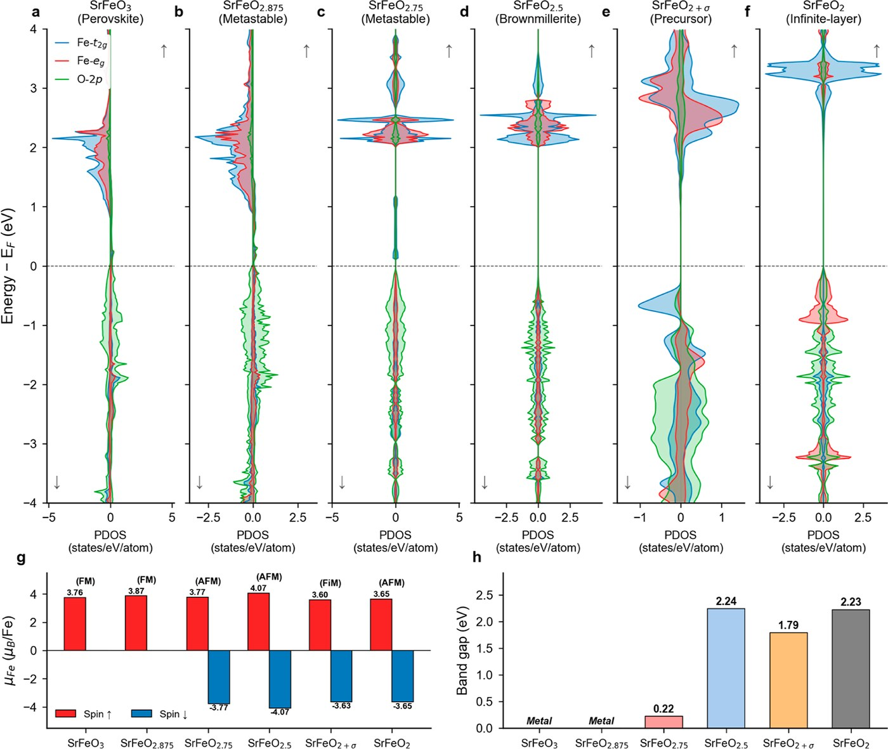
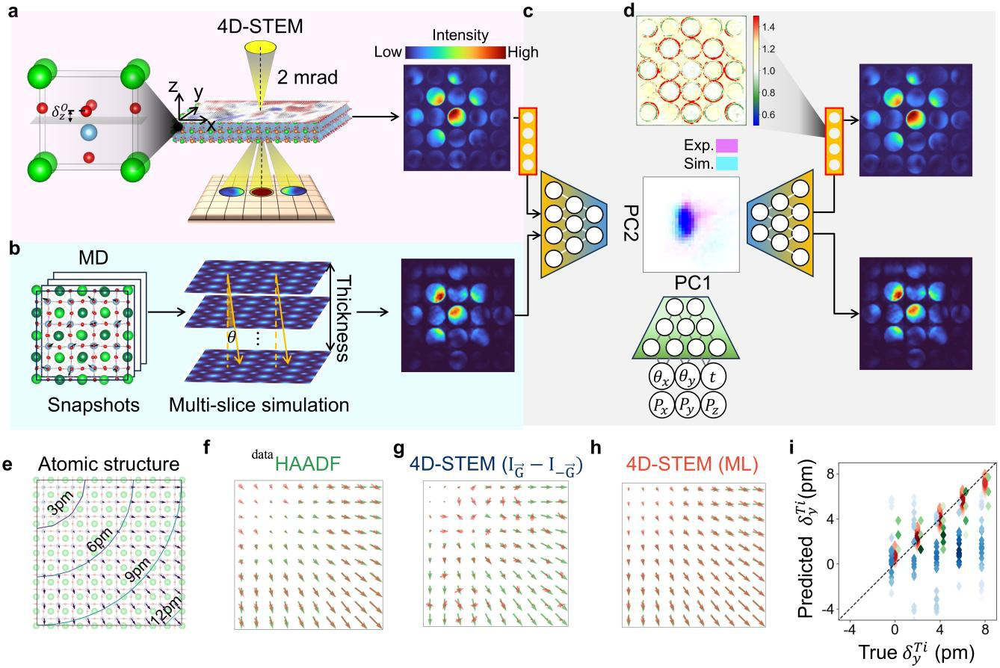

Research
Deep learning, atomistic simulation, and atomic-resolution electron microscopy of functional oxides.
Research Interest
Methods: deep learning for microscopy, ab initio multislice image simulation, ab initio / machine-learning-force-field molecular dynamics, phonon properties, DFT
Materials systems: oxide surfaces and interfaces, perovskites, 2D materials

DFT calculation for the reversed-field (P↑) state: the interior BaTiO₃ switches while the oxygen-vacancy-pinned layer near Pt remains downward, producing a charged head-to-head domain wall and localized in-gap states (red) near the interface. Adapted from Jeong, Byun et al., Science Advances (accepted).
Defect-Engineered Ferroelectric & Multiferroic Tunnel Junctions
First-principles and machine-learning force-field calculations of oxygen-vacancy and antisite-defect effects on polarization switching in ferroelectric tunnel junctions. The key result: an oxygen-vacancy-pinned interfacial layer resists switching under an opposing field, forcing the interior barrier into a charged head-to-head domain configuration rather than a uniform reversed state — directly explaining the suppressed tunneling electroresistance observed experimentally in HfO2-, BaTiO3-, and Ca-doped BiFeO3-based junctions.
See Wang, Byun et al., Adv. Mater. 2023 and Lee, Byun et al., Appl. Mater. Today 2022 (figure: Jeong, Byun et al., Science Advances, accepted).
View related publications
DFT electronic-structure calculation across the SrFeO₃−x series: the newly identified SrFeO₂⁺σ buffer phase is a magnetic/electronic outlier — it favors ferrimagnetic order and a reduced band gap (1.79 eV) unlike the wide-gap antiferromagnetic phases on either side. Xing, Byun et al., J. Am. Chem. Soc. (2026).
Atomic-Scale Phase Transitions & Vacancy Ordering in Transition-Metal Oxides
In-situ (S)TEM combined with DFT and molecular dynamics to resolve oxygen-mediated topotactic phase transitions in perovskite–infinite-layer transformations. The key result: reduction of SrFeO3 reveals a previously unreported SrFeO2+σ buffer phase that is not merely a structural stepping stone but an electronically and magnetically distinct state — ferrimagnetic with a markedly reduced band gap — that accommodates the severe lattice collapse en route to the infinite-layer phase, with related interfacial charge/polarization reconstruction observed at LaAlO3/SrTiO3 and polar ZnO surfaces.
See Xing, Byun et al., JACS 2026 and Wang, Byun et al., Nat. Commun. 2022.
View related publications
Deep-learning framework for extracting picometer-scale atomic displacement vectors from 4D-STEM data: acquisition and multislice-simulation training pipeline, network architecture, and validation against HAADF-derived displacements. Byun, Lee et al., arXiv:2506.06598 (2025).
Deep Learning for Electron Microscopy
Deep-learning models for reconstructing 3D polarization fields directly from 4D-STEM diffraction data, aimed at extending atomic-resolution polarization and strain mapping beyond what conventional image-based analysis can resolve.
See Byun, Lee et al., arXiv:2506.06598 (2025).
View related publicationsTechnical Skills
DFT/MD codes: VASP, Quantum Espresso, CP2K, Wannier90, Phonopy, GULP
ML: PyTorch · Programming: Python, C++ (Arduino)
Scientific computing: Linux server management, queuing systems (SGE), Git